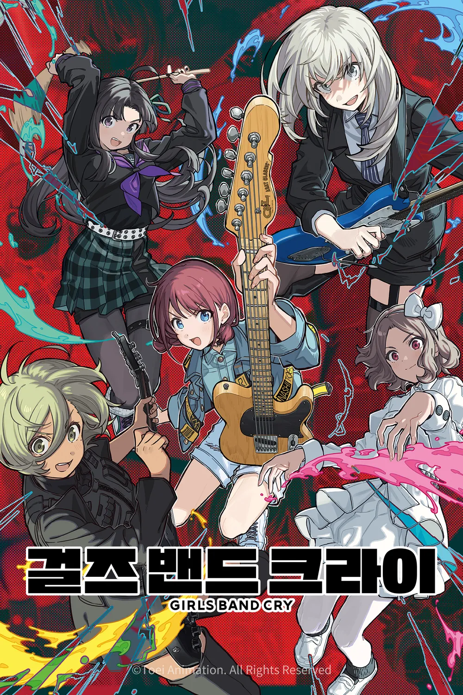

추천하는 이유
돈많이버는 회사인 토에이에서 10년넘게 쌓아온 3d노하우와
막히지 않는 자본력으로 만든 밴드 애니메이션이다
3d 공연씬이 있는 애니매이션 시리즈를 오랜기간 제작한 배태랑인
감독 사카이 카즈오와 그와 함께 합을 맞춰본
각본가인 하나다 줏키가 제작에 참여하여 만든 애니메이션이다
한화의 구성이 정말 깔끔하게 갈등 그리고 해결을 보여주는데
한화만에 풀어내는데에도 전개가 속도감 있음에도 불구하고
탄탄하고 깔끔하게 전개를 마무리하지만 다음화가 궁금하게 만들어지게 한다.
근래 3d 애니메이션중 가장 움직임이 자연스럽고 표정묘사가 굉장하고 다양해
움직이는것 만보아도 재미있게 한다.
3d연출이다 보니 화면의 전환이 자유롭고 역동적인데다
거기에 좋은 연출이 더해지니 밴드 라이브의 입체감과 생동감을 끝내주게 보여준다.
또한 기존의 밴드물에 비해 갈등요소가 정말 밴드맨으로써 꽤나 진지한 편이고
등장인물들도 제대로 갈등요소에 제대로 머리를 박으며 해결하려고 하는 모습을 보여준다